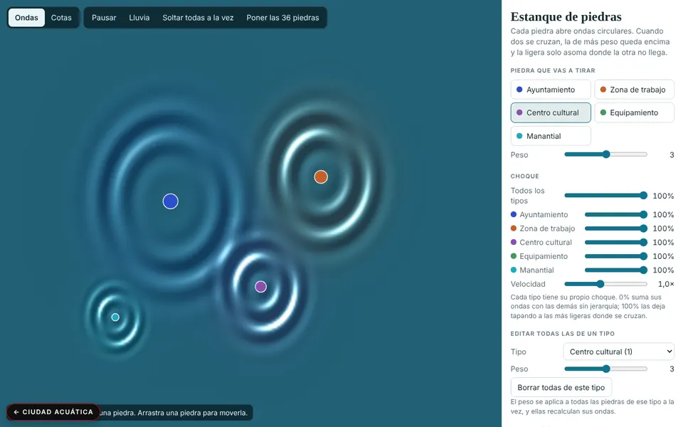

Campo de niveles
Genera la planta de la ciudad a partir de las ondas: usos del suelo, niveles con curvas, densidad y habitantes. Exporta DXF.
Abrir →
Estanque de piedras
El concepto en movimiento: tira piedras de distinto peso y mira cómo se cruzan las ondas según la regla de choque.
Abrir →La idea
De la civitas a la urbs: el programa (la sociedad) dibuja el suelo (la forma). Tres ayuntamientos, cuatro zonas de trabajo, cinco centros culturales, catorce equipamientos y diez manantiales caen sobre un territorio tipo con una pendiente del 1 % hacia el norte. Cuanto más pesado es el objeto, más grande, rápida y duradera es su onda.
Por qué una herramienta
El campo de niveles convierte esas reglas en una planta medible: superficie de vivienda, habitantes, densidad (objetivo 7.000–15.000 hab/km²), láminas de agua y cotas. Cambio el peso de una piedra o el choque entre tipos y la ciudad se recalcula; lo que sale se exporta a DXF para seguir dibujando en AutoCAD.